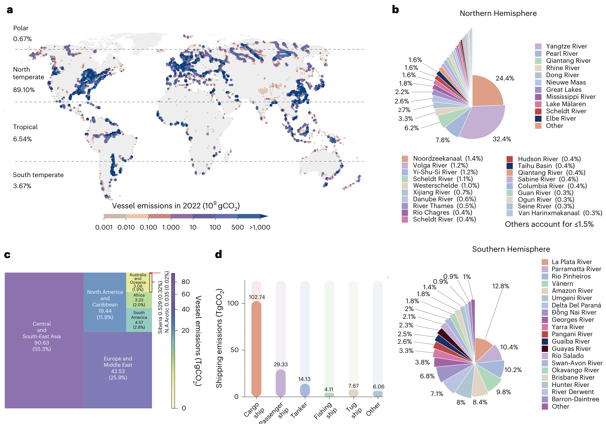
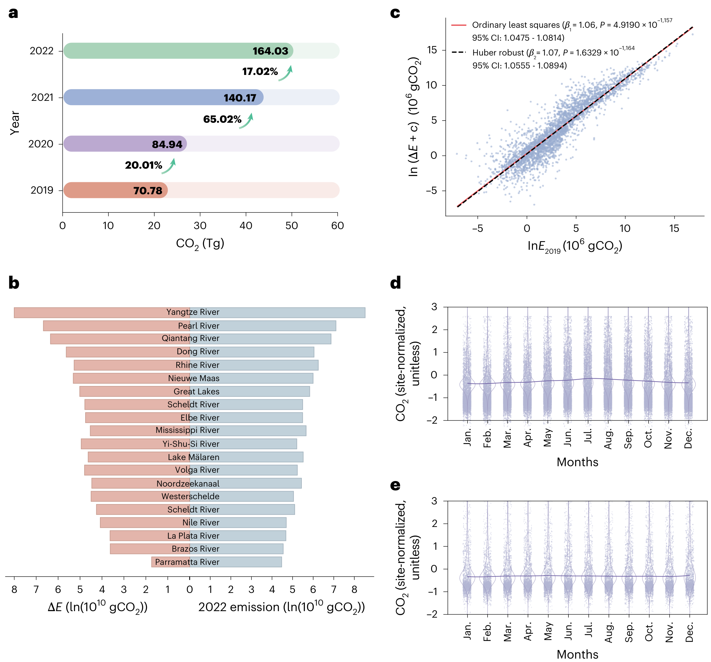
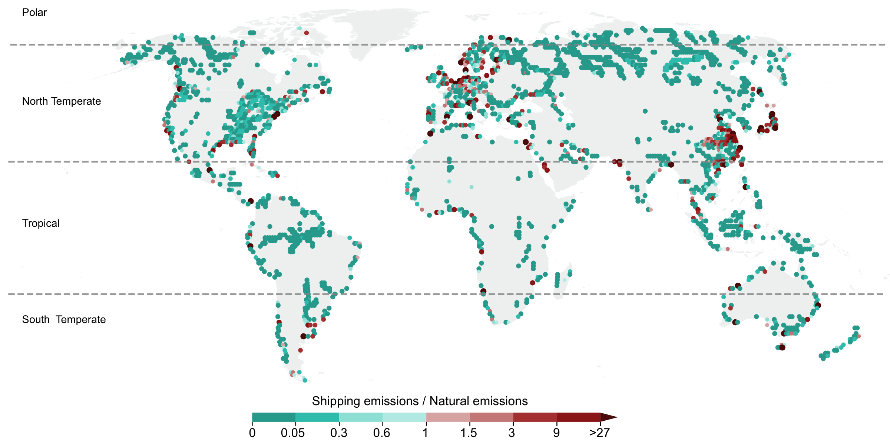

河流船舶排放：全球水运碳账本中被低估的一块 | Nature Climate Change
Lu, D., Zhang, D., Wang, S., Wang, H., Min, Z., Li, X., Wu, Y., Huang, Y., Wang, T., Liu, S., Xia, X., Yan, X., & Jiang, G. (2026). Global vessel carbon dioxide emission from navigable rivers. Nature Climate Change. https://doi.org/10.1038/s41558-026-02718-6
这项研究由中国科学院生态环境研究中心、江汉大学、武汉理工大学、集美大学和北京师范大学的团队完成。第一作者 Dawei Lu 隶属中国科学院生态环境研究中心和江汉大学；通讯作者为 Tengfei Wang（武汉理工大学）、Shaoda Liu 和 Xinghui Xia（北京师范大学）。团队使用约 200 亿条自动识别系统（AIS）记录和轨迹补全算法，估算全球可航河流上的船舶二氧化碳排放。
论文给出的 2022 年估计为 164.0 ± 1.58 TgCO₂，约占全球水运船舶 CO₂ 排放的 24.7%，而相关船舶活动覆盖的海洋与内陆可航水面只有 0.4%。排放集中在少数河流走廊，2019—2022 年间大致翻倍。
结论先行
- 2022 年内河船舶排放估计为 164.0 ± 1.58 TgCO₂，约占全球水运船舶排放的四分之一。
- 12,289 条被识别为可航的河流中，排放最高的 20 条贡献总量的 68.72%。
- 2019—2022 年全球内河船舶排放约翻倍，基线排放较高的河流往往增加得更多。
- 船舶活动强度和周边 GDP 密度决定排放主要集中在哪里，水文条件调节季节变化。
- 船舶排放与河流—大气 CO₂ 逸散发生在同一空间，但属于不同排放过程。
研究与方法
作者识别出 12,289 条具有持续 AIS 信号的可航河流，包括部分人工航道，将 2019—2022 年约 200 亿条 AIS 记录映射到 0.01° × 0.01° 网格，并用轨迹补全方法重建弯曲和多分汊河段的船舶运动。排放估计结合船舶技术规格和活动轨迹。100,000 次 Monte Carlo 模拟得到 0.97% 的方法学不确定性。
这个设计支持全球空间比较，但不等于逐船实测烟气排放。AIS 覆盖不足、技术参数误差和轨迹补全都会影响结果，小型渔船的排放尤其可能被低估。
排放集中在少数河流走廊

排放最高的 20 条河流贡献 68.72%。长江估计为 50.45 TgCO₂ yr⁻¹，莱茵河为 5.18，密西西比河为 2.87，多瑙河为 0.95。长江下游河段长度约占全河 5.7%，却贡献该河约 40% 的船舶排放，说明热点由港口、货运需求和通航条件共同形成。
增长与季节性

中东南亚在 2019—2022 年增加 56.5 TgCO₂，欧洲与中东增加 21.4，北美与加勒比海增加 9.71。全球月度排放通常在 2 月最低，峰谷比为 1.47—2.33；北半球多在 7 月达到高点。
需求与水文约束
广义加性模型显示，船舶活动强度与排放的关联最强，河流周边 50 km 缓冲区的 GDP 密度次之；径流和温度的关系较弱且呈非线性。这不表示水文条件无关紧要。研究对象本身已限定为可航河流，水文变量更像通航能力的边界条件，运输需求则决定排放在可航河段中如何聚集。
河流碳交换

船舶排放是运输部门的直接排放，河流 CO₂ 逸散属于河流碳循环。论文发现船舶活动与气体传输速度存在正相关，这与船舶波浪和螺旋桨混合可能增强水气交换的解释相容，但没有直接验证因果机制。
启示
船队更新和岸基补能可以优先面向高排放河流和货船群。港口仍需结合靠泊时间、功率需求、电网容量和水位季节变化评估设施。排放清单则需要采用比国家总量更细的时空口径，以识别跨境河流和局部热点。
局限性
- AIS 对小型渔船和信号不连续河段覆盖不足。
- 0.97% 不确定性不涵盖所有观测缺失和结构性误差。
- 具有持续 AIS 信号的可航河流不等于所有存在船舶活动的河道。
- 船舶活动与水气交换的关联仍需过程实验验证。